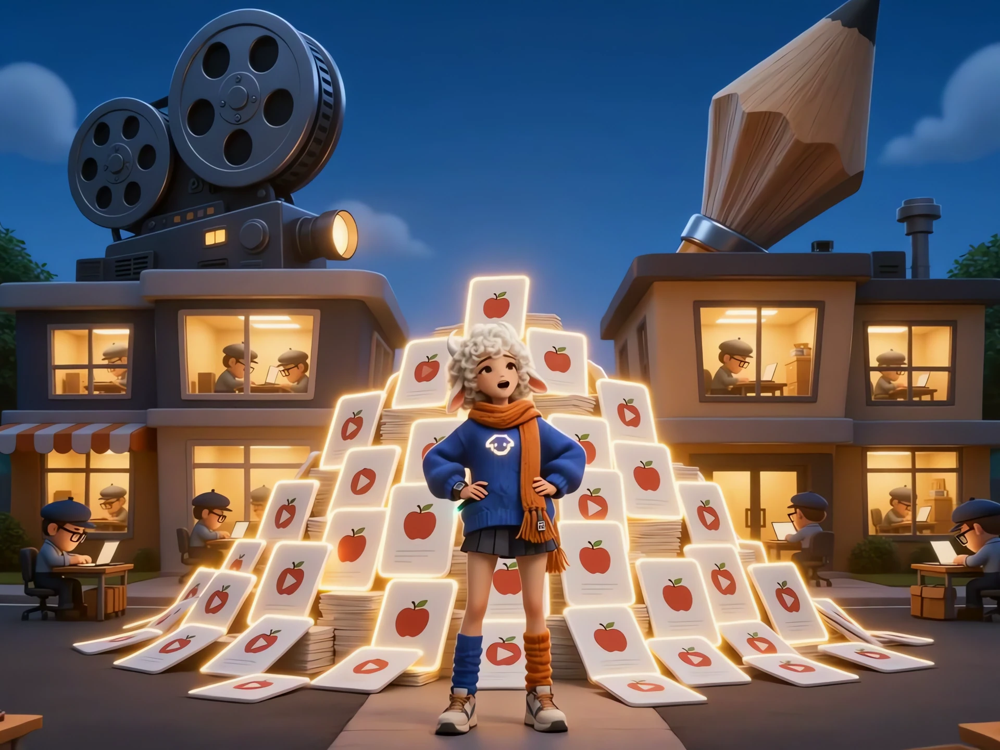

01 / 手表内容量产
2000+ 条视频，
怎样在一周内
完成交付？
我把零散制作重构为内部 AI 量产机制，让批量内容有统一标准、交付节奏和返修出口。
- 业务问题
- 规模生产与小屏呈现的一致性
- 业务变化
- 自动化承接重复加工，人工聚焦品检与例外
- 我的价值
- 把量产方案、验收标准与周期交付组织起来
2 天制作 · 1 周完整交付含品检与返修；2000+ 条视频单周期上线。
看完整案例把一点好奇心，慢慢做成作品。
看我改变了什么，以及这些变化如何落到业务里。
01 / 手表内容量产
我把零散制作重构为内部 AI 量产机制，让批量内容有统一标准、交付节奏和返修出口。
2 天制作 · 1 周完整交付含品检与返修；2000+ 条视频单周期上线。
看完整案例用于体验输入与输出的网页示例；同事贡献的已登记工具见平台展厅。
选一个真实场景，看看想法怎样落地。
把重复录入，交给清楚的结构。
从一页教材，到可检查的镜头。
让内容、证据和结论各就各位。
三种场景，同一个可复用的入口。
本地示例，不调用生成服务。
02 / 内容培训平台
让同事用 AI 解决真实工作问题，再把工具和方法留下来，减少团队反复处理同类任务。
我负责培训、平台产品定义与搭建；
工具由同事共同贡献。
平台登记的单次任务耗时，2026-10-11 核对；未独立复测，不外推为团队总收益。
进入平台展厅每一步，都要知道自己在判断什么。
检查思路演示试着动手判断

拖动下方滑杆，看看主体会不会被裁掉。
手机观看先按 9:16 检查，重要信息留在中间。
把三条约束放进同一张样片，再看哪些边界需要调整。
主体在画面内，继续检查边缘与留白。
勾选三项后，可导出这份示例检查清单。
把受众、设备、画幅和交付要求讲清楚，再开始生成。先确定验收标准，才能判断一张好看的图是否真的可用。
检查框与约束为方法演示，不是实际项目质检记录或原始生产提示词。
《本来只是比个价》 · 把标准和反馈统一，让方案可共同判断。
读完整这一话